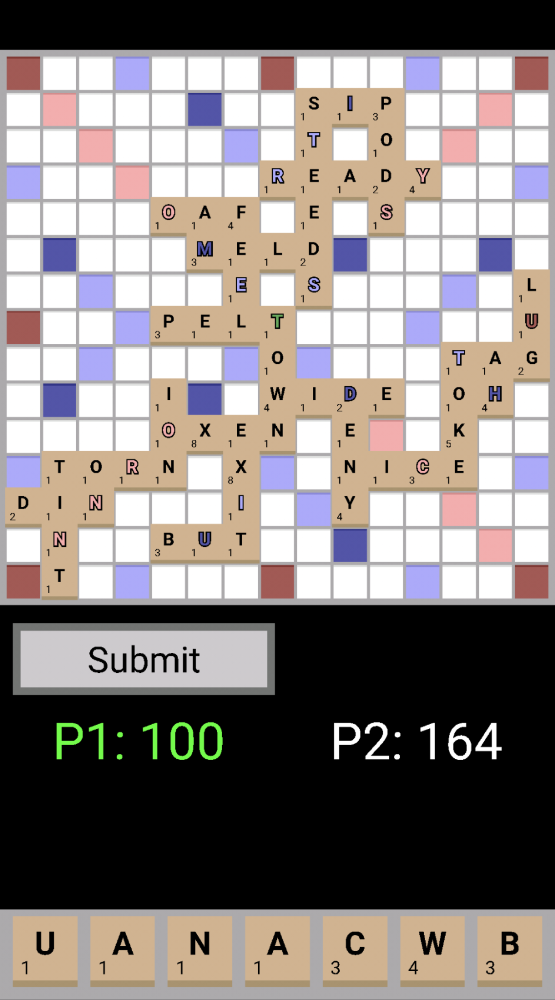

Projects
This page highlights some of my favorite projects I have worked on.
| Table of Contents |
|---|
Games
CubeMan
CubeMan was the first game I ever wrote. It is a side-scrolling game where you play as a smiley faced cube and avoid incoming cubes. You earn score for the amount of time you survive, and the game gets faster as your score increases.
I wrote the game using Python 3 and PyGame. I created the game while I was in junior high, and it will forever be one of my favorite projects.
The Cosmic Taco
The Cosmic Taco is the name of the game I wrote during my independent programming study in high school. The game is a side-scrolling game where you are a taco flying through space and must avoid incoming asteroids.
I wrote the game using C++, and I used a library called Simple DirectMedia Layer to handle the window creation, graphics, and input processing. It took me about four months to write the game.
Dictionary Dash
Dictionary Dash is a mobile game I wrote for the Android operating system. The game behaves similarly to the board game Scrabble.
I wrote the game using Java and the Android SDK. It took me about a month to get it into the state it is currently in.
|  |
| Gameplay of Dictionary Dash. |
Several parts of the project took creative problem solving to complete. The first issue was storing the dictionary. The word list I used has tens of thousands of entries. Every time a word is placed (or attempted to be placed), the game checks the dictionary to see if the word is valid. For the AI I wrote thousands of checks may be required in a second. Thus, I needed to store the words in a way to enable efficient searching. Originally, I used a sorted array and binary search. However, I was able to get incredibly fast lookup speeds using a tree based on the letters of each word. Essentially, each node in the tree represents a letter in a word. Then, each child node represents a next letter. If a letter is the end of a word, the node is flagged as such.
I also wrote an AI for the application. First, the AI checks for locations to start building words. Once it finds all possible build locations, the AI begins constructing words using the letters in its deck. It starts checking at the initial build location, and then places tiles to the right or down until it runs out of tiles. After it exhausts all possibilities, it moves one tile left or up, then starts over again. When a valid move is found, the score that would be earned is calculated and the move is added to a priority queue. After all possible moves have been found, it pulls the highest scoring move from the priority queue and plays that move.